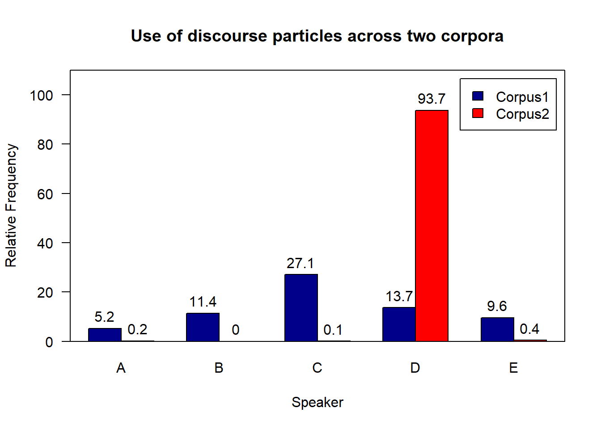

Descriptive Statistics
Martin Schweinberger
2 Dezember 2018
Statistics can be divided into two main areas. Descriptive Statistics deals with the description of data and their visualization, while Inference statistics deals with testing assumptions about correlations between variables (<www.slcladal.slcladal.github.io>). The following section focuses on describing data, especially with measures of central tendency and measures of variability.
1 Measures of central tendency
In linguistics three measures of central tendency are of particular relevance: the mean, the median and the mode. Which measure is appropriate depends on the type of variables and the data distribution one is dealing with and what is the intended aim of the data summary.
1.1 Mean
The mean is used when the data is numeric and normally distributed. The mean is calculated by applying the formula shown below.
\[\begin{equation} \bar{x}=\frac{1}{n} \sum_{i=1}^n x_i = \frac{x_{1}+x_{2}+ \dots + x_{n}}{n} \label{eq:mittel} \end{equation}\]To calculate the mean, sum up all values and divide by the number of valuaes. See the example below for clarification. Consider, we are interested in the mean length of sentences ina short text, then the first thing we could do would be to list the sentences and their length ina table.
| Sentences | Words |
|---|---|
| Call me Ishmael | 3 |
| Some years ago – never mind how long precisely – having little or no money in my purse, and nothing particular to interest me on shore, I thought I would sail about a little and see the watery part of the world. | 40 |
| It is a way I have of driving off the spleen, and regulating the circulation. | 15 |
| Whenever I find myself growing grim about the mouth; whenever it is a damp, drizzly November in my soul; whenever I find myself involuntarily pausing before coffin warehouses, and bringing up the rear of every funeral I meet; and especially whenever my hypos get such an upper hand of me, that it requires a strong moral principle to prevent me from deliberately stepping into the street, and methodically knocking people’s hats off–then, I account it high time to get to sea as soon as I can. | 87 |
To calculate the mean, we need to divide the sum of the number of words per sentence (145) by the number of sentences (7) (cf. equation ()).
\[\begin{equation} \frac{3+40+15+87}{4} = \frac{145}{4} = 36.25 \label{eq:mittel2} \end{equation}\]The mean sentences length in our example is 36.25 words
In R, the mean is calculated as follows.
# create numeric vector
frequencies <- c(3, 40, 15, 87)
# calculate mean
mean(frequencies)## [1] 36.251.2 Median
The median is typically used hwen dealing with ordinal variables, i.e. variables that are ordered but not truely numeric. The median is the central value in a de- or increasing ordering of values in a vector. In other words, 50% of values are above and 50% of values are below the median in a given vector.
If the vector contains an even number of elements, then the two central values are summed up and divided by 2. If the vector contains an uneven number of elements, the median represents the central value.
\[\begin{equation} median_{x}= \begin{cases} x_{\frac{n+1}{2}} & n\text{ uneven} \\ \frac{1}{2}\bigl(x_{\frac{n}{2}}+x_{\frac{n+1}{2}}\bigr) & n\text{ even} \end{cases} \label{eq:median} \end{equation}\]Let’s have a look at an example. Consider you are interested in the age stratification of speakers in the private dialogie section of the Irish component of the International Corpus of English (ICE). When tabulating and plotting the age variable you get the following table and graph.
| Age | Counts |
|---|---|
| 0-10 | 9 |
| 19-25 | 160 |
| 26-33 | 70 |
| 34-41 | 15 |
| 42-49 | 9 |
| 50+ | 57 |
Age <- c("0-18", "19-25", "26-33", "34-41", "42-49", "50+")
Counts <- c(9, 160, 70, 15, 9, 57)
df <- data.frame(Age, Counts)
#barplot(df)
The age groups represent an order factor which means that there are catergories with a natural order (here from old to young or vice versa). If we order speakers according to their age from young to old, we geta vector of length 320. If we then take the central value, i.e. the value of the 160\(^{th}\) speaker, we get the median age in the private dialogie section of the Irish component of the International Corpus of English (ICE).
In R, the median is calculated like below.
# create a vector consisting out of ranks
ranks <- c(rep(1, 9), rep(2, 160), rep(3, 70), rep(4, 15), rep(5, 9), rep(6, 57))
# calculate median
median(ranks)## [1] 2In our case, the median age is 19-25 because the 160\(^{th}\) speaker belongs to the 2\(^{nd}\) age group, i.e. the age group with speakers between 19 and 25 years old.
1.3 Mode
The mode is typically used when dealing with categorical variables and it reports which level of a factor or a categorical variable is the most frequent. Here is an example to illustrate the mode. Consider you are interested where most speakers in the private dialogie section of the Irish component of the International Corpus of English are currently residing and you get the fowllowing distribution.
| CurrentResidence | Speakers |
|---|---|
| Belfast | 98 |
| Down | 20 |
| Dublin (city) | 110 |
| Limerick | 13 |
| Tipperary | 19 |

The tabulated and visualized data show that the mode is “Dublin (City)”, because the largest group (110 speakers) of speakers in the corpus are speakers from Dublin (City). This means that the “average” speaker in in the private dialogue section of the Irish component of the International Corpus of English (ICE) is from Dublin city.
In the mode is calculated as shown below:
# create a factor with different levels
CurrentResidence <- c(rep("Belfast", 98), rep("Down", 20), rep("Dublin (city)", 110), rep("Limerick", 13), rep("Tipperary", 19))
# calculate mode
names(which.max(table(CurrentResidence)))## [1] "Dublin (city)"A word of warning is in order here as only the first(!) maximal value is provided by R even if several categories have the same frequency.
1.4 Notes on measures of central tendency
Man kann sich nun fragen, warum es drei unterschiedliche Maße der zentralen Tendenz gibt und warum diese notwendig sind. Anhand eines fiktiven Beispiels soll dies erläutert werden. Nehmen wir an, sie untersuchen die Häufigkeit des Gebrauchs von Diskurspartikeln in zwei kleinen Korpora, die dieselben Sprecher enthalten, aber in unterschiedlichen Gesprächssituationen. Sie berechnen für jeden Sprecher die relative Häufigkeit von Diskurspartikeln pro 1,000 Wörtern pro Korpus und berichten anschließend einen Mittelwert von 13.4 für beide Korpora. Es scheint also so zu sein, dass sich die beiden Korpora hinsichtlich des Gebrauchs von Diskurspartikeln nicht unterscheiden. Wenn man allerdings Tabelle () und Grafik () betrachtet, so fällt sofort auf, dass die Angabe des arithmetischen Mittels keine gute Abbildung der Datenstruktur darstellt.
| Corpus | Speaker | Freq |
|---|---|---|
| C1 | A | 5.2 |
| C1 | B | 11.4 |
| C1 | C | 27.1 |
| C1 | D | 13.7 |
| C1 | E | 9.6 |
| C2 | A | 0.2 |
| C2 | B | 0.0 |
| C2 | C | 1.1 |
| C2 | D | 93.7 |
| C2 | E | 0.4 |

Es wird deutlich, dass sich die Diskurspartikeln in Korpus 1 relativ gleichmäßig über die Sprecher verteilen, während vier der fünf Sprecher in Korpus 2 extrem wenige Diskurspartikeln verwenden und nun ein einzelner Sprecher für den hohen Mittelwert verantwortlich ist. In solchen Fällen ist es günstig neben dem arithmetischen Mittel noch den Median anzugeben, da so deutlich wird, dass sich die Verteilungen klar unterscheiden. In anderen Worten: Auch bei numerischen Variablen kann die Berechnung des Medians, als Maß der zentralen Tendenz sinnvoll sein, wenn die Verteilung der Daten einer Normalverteilung sehr unähnlich ist. Man würde dies etwa wie folgt zusammenfassen: Die Verteilung der relativen Häufigkeiten von Diskurspartikeln in Korpus 1 (arithmetisches Mittel: 13.7, Median: 11.4) unterscheiden sich deutlich von der Verteilung der Häufigkeiten in Korpus 2 (arithmetisches Mittel: 13.7, Median: 0.4).
Abschließend ist zu sagen, dass – ähnlich wie bei Variablen – die verschiedenen Maße der zentralen Tendenz zwar aufwärts- aber nicht abwärtskompatibel sind. Dies bedeutet, dass auch bei numerischen Variablen der Modus und Median berechnet werden kann, das arithmetische Mittel darf man jedoch nur mit numerischen Variablen berechnet werden. Wir werden nun auf eine andere Möglichkeit eingehen den Unterschied zwischen Korpus 1 und Korpus 2 zu verdeutlichen: Streuungsmaße.
2 Measures of variability
Streuungsmaße geben Aufschluss darüber, wie die Datenpunkte verteilt sind, d.h. ob die Werte der Datenpunkte relative homogen sind und wenig voneinander abweichen, oder ob sie sehr heterogen sind und stark voneinander abweichen. Wir werden im Folgenden zwei Streuungsmaße behandeln: die und die . Auch hier soll zu Beginn ein Beispiel den Nutzen dieser Streuungsmaße aufzeigen. Nehmen wir an, wir haben es mit zwei Städten zu tun, deren Jahresdurchschnittstemperatur identisch ist, die sich allerdings, wie aus Tabelle () Grafik () ersichtlich, dennoch erheblich unterscheiden.
| Month | CityA | CityB |
|---|---|---|
| January | -5.00 | 7.00 |
| February | -12.00 | 7.00 |
| March | 5.00 | 8.00 |
| April | 12.00 | 9.00 |
| May | 15.00 | 10.00 |
| June | 18.00 | 13.00 |
| July | 22.00 | 15.00 |
| August | 23.00 | 15.00 |
| September | 20.00 | 13.00 |
| October | 16.00 | 11.00 |
| November | 8.00 | 8.00 |
| December | 1.00 | 7.00 |
| Mean | 10.25 | 10.25 |

Im Folgenden werden wir nun die verschiedenen Streuungsmaße für die Jahrestemperatur dieser zwei Städte berechnen.
2.1 Variance
Die Varianz berechnet sich nach Formel (), d.h. jeder Wert wird von dem arithmetischen Mittel abgezogen und das Ergebnis wird dann quadriert. Diese quadrierten Werte werden addiert und durch die Größe der Stichprobe minus 1 geteilt.
\(s = \sigma^2 = \frac{1}{n-1} \sum_{i=1}^{n} (x_i - \bar{x})^{2}\)
For our example, the equaltion provides a value of 123.6591 for city A and a value of 9.477273 for city B.
In R, the variance is calculated like below:
# create a numeric vector
cityA <- c(-5, -12, 5, 12, 15, 18, 22, 23, 20, 16, 8, 1)
# calculate variance
sd(cityA)^2## [1] 123.65912.2 Standard deviation
The standard deviation (abbreviated with capital \(sigma\) \(\sigma\)) is calculated according to equation () or, alternatively, according to equation () and it is the square root of the squared variance.
\(\sigma = \sqrt{s} = \sqrt{\frac{1}{n-1} \sum_{i=1}^{n} (x_i - \bar{x})^2}\)
\(\sigma = \sqrt{\frac{ \sum_{i=1}^{n} (x_i - \bar{x})^2}{n-1}}\)
Für unser Beispiel ergeben sich nach Formel () für Stadt A eine Standardabweichung von 11.12 und für Stadt B eine Standardabweichung von 3.08.
The standard devaition is calculated like below in .
# create a numeric vector
CityA <- c(-5, -12, 5, 12, 15, 18, 22, 23, 20, 16, 8, 1)
# calculate standard deviation
sd(CityA)## [1] 11.120212.3 Measures of variability for non-normal data
Bislang haben wir nicht beachtet, wie die Daten, die wir betrachten normalverteilt sind oder nicht. Im Folgenden werden wir auf Möglichkeiten eingehen nicht normalverteilte Daten zu beschreiben. Im ersten Schritt erstellen wir Beispieldaten und bestimmen anschließend, ob die Daten normalverteilt sind oder nicht. Hierzu nutzen wir den Shapiro-Wilk Test, welcher darüber Auskunft gibt, ob die Zahlenreihe signifikant von der Normalverteilung abweicht oder nicht.
# anmerkungen
k1 <- c(9.2, 11.4, 27.1, 13.7, 9.6)
k2 <- c(0.7, 0.0, 1.1, 68.7, 0.5)
# apply shapiro-wilk test
shapiro.test(k1) # p < .05 = non-normal##
## Shapiro-Wilk normality test
##
## data: k1
## W = 0.75258, p-value = 0.03144shapiro.test(k2) # p < .05 = non-normal##
## Shapiro-Wilk normality test
##
## data: k2
## W = 0.56501, p-value = 0.0002032The Shapiro-Wilk test shows that the distribution in the data differs significantly froma normal distribution. However, the Shapiro-Wilk test has been found to be too generous with small samples and too harsh when dealing with large samples. For this erason, it is recommended that the test should always be accompanied by additional eye-balling of the data.
2.4 Quantile
When dealing with non-normal data, the best option to provide a summary of the distribution is to report the quantiles.
3 Excercises
- Calculate the mean, median, and mode as well as the standrad deviation for the follwoing two vactors.
A: 1, 3, 6, 2, 1, 1, 6, 8, 4, 2, 3, 5, 0, 0, 2, 1, 2, 1, 0
B: 3, 2, 5, 1, 1, 4, 0, 0, 2, 3, 0, 3, 0, 5, 4, 5, 3, 3, 4
mean:
median:
mode:
standard deviation:
Find a partner and discuss which meaure of central tendency is sppropriate when dealing with grades. Then, find another partner and see whether they hve come to teh same conclusion or discuss why if not. Finally, discuss the advantages and disadvantages of calculateing themmean when dealing with grades.
Where are mean, median, and mode when dealing with normal data?
Sie erhalten bei drei Untersuchungen mit jeweils zwei Gruppen einmal nahezu identische Steuungen, aber unterschiedliche Mittelwerte, einmal nahezu identische Mittelwerte, aber unterschiedliche Steuungen, und in der letzten Untersuchung sowohl unterschiedliche Mittelwerte und unterschiedliche Streuungen. \ Wie interpretieren Sie diese drei Ergebnisse?
Suchen Sie sich nun einen Partner und diskutieren Sie zusammen, was es auf der konzeptionellen und nicht auf der statistischen Ebene bedeuten könnte, dass zwei Gruppen unterschiedliche Streuungen aufweisen. (Vorsicht: Dies ist nicht so trivial, wie es auf den ersten Blick wirken könnte!)